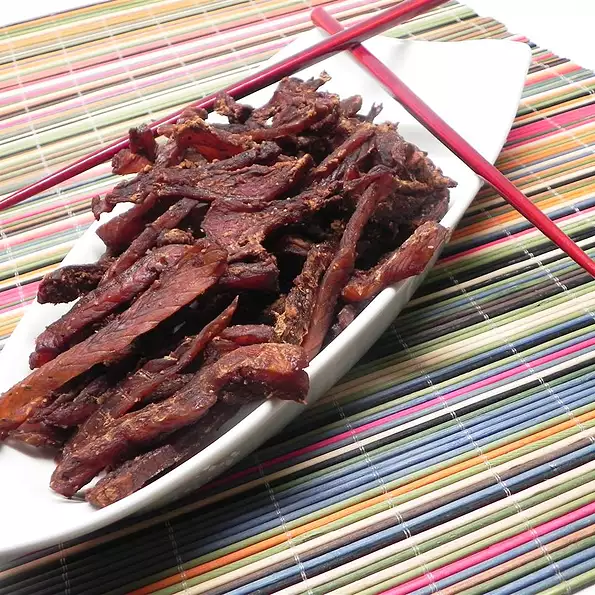

Dylan's Salmon Jerky

Ingredients
- 1 cup soy sauce
- 6 tablespoons brown sugar
- 1 tablespoon rock salt
- 2 teaspoons ground black pepper
- 4 pounds salmon fillets
Steps
- Mix soy sauce, brown sugar, rock salt, and black pepper together in a saucepan; bring to a boil and cook until sugar and salt are dissolved, 2 to 3 minutes. Remove saucepan from heat and cool marinade.
- Cut salmon into strips, with or without the skin. Pour marinade into a shallow bowl and lay salmon strips into the shallow bowl. Refrigerate for 45 minutes.
- Preheat oven to 185 degrees F (85 degrees C). Line a baking sheet with aluminum foil and place a wire rack on top. Lay salmon strips on the wire rack, discarding extra marinade.
- Place the sheet of salmon in the oven until dehydrated, about 8 hours.